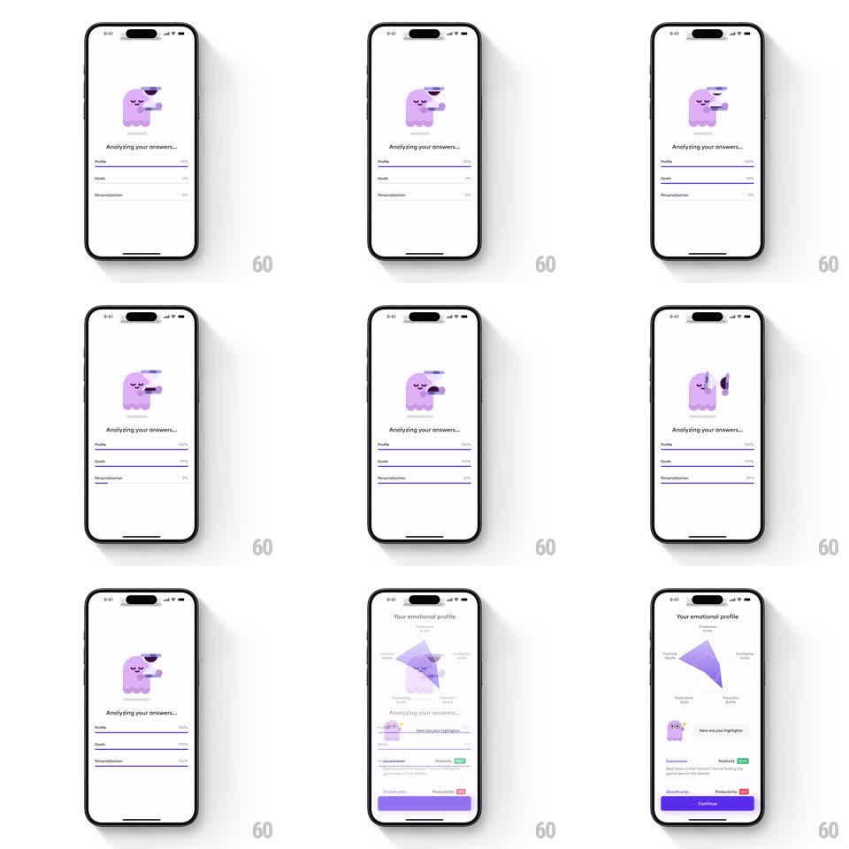

Media
Frame-by-frame

Rebuild this animation 1:1: Ahead's profile-analysis loader - a purple blob mascot sips coffee while three labeled progress bars (Profile, Goals, Personalization) fill in sequence, then the screen transitions to a radar chart of "Your emotional profile" whose shape springs outward to its final values.

Rebuild this animation 1:1: Ahead's profile-analysis loader - a purple blob mascot sips coffee while three labeled progress bars (Profile, Goals, Personalization) fill in sequence, then the screen transitions to a radar chart of "Your emotional profile" whose shape springs outward to its final values. ## Integration Integration: stack-agnostic spec - springs given as stiffness/damping, timed motions as duration + curve; map every value to your framework and animation library of choice. ## Scene Loading screen, white: purple blob mascot holding a coffee cup, "Analyzing your answers..." headline, three progress rows each with a label and percent value. Result screen: "Your emotional profile" title, a 6-axis radar chart with a filled purple shape, axis labels with percents (Calmness, Confidence, Positivity, Resilience, Stress, others), a "Here are your highlights" section with tag rows (colored pills like Positivity up, Productivity down), and a full-width purple Continue button. ## Motion spec Pattern: sequential progress loader into springing radar reveal. - Each progress bar fills left to right (width 0 to 100%, ~800ms, ease-in-out), one after another with ~200ms gaps; the percent counts up in sync with its bar. - The mascot idles: raises the cup and sips every ~2s (arm rotation ~20deg, 400ms), eyes blink periodically. - Transition: the loader fades out (200ms) as the profile screen fades in. - The radar shape starts collapsed at the center and springs outward to its final polygon (scale 0 to 1 from chart center, spring stiffness ~180, damping ~14, one visible overshoot past the final vertices). - Highlight rows stagger in below (translateY 12px to 0, opacity 0 to 1, 180ms each, 80ms apart). ## Calibration - Bars fill strictly in order - parallel filling loses the "working through it" narrative. - The radar overshoot is the payoff; a plain ease-out reads flat. ## Reduced motion Bars fill without animation to their final widths; radar renders final; staggers become a single 200ms fade. ## Don't miss - The percent values are live counters tied to bar progress, not static labels. - The radar fill is semi-transparent purple over faint grid rings - keep the grid visible through it.